Mỹ nhân hàng đầu Thái Lan diện trang phục truyền thống đẹp như nữ thần
Trang phục truyền thống là niềm tự hào của người dân Thái Lan thể hiện rõ dấu ấn văn hóa Phật giáo.
Sự kiện:Phong cách thời trang của SAO
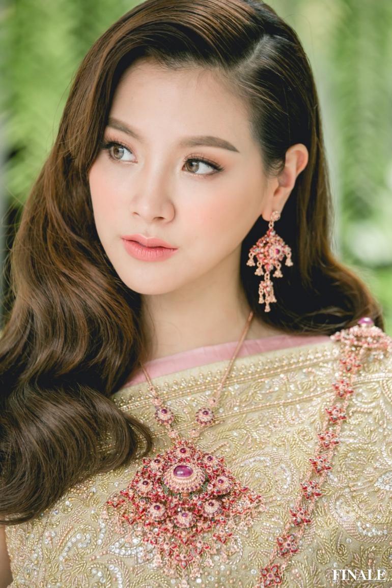
Nữ chính bộ phim "Chiếc lá cuốn bay" trong trang phục truyền thống.
Mỗi quốc gia đều có một trang phục truyền thống riêng, Việt Nam có áo dài, nhắc đến Hàn Quốc là nhớ tới hanbok, hay Nhật Bản nổi bật với kinono và Thái Lan cũng vậy. Người dân Thái coi trang phục truyền thống là niềm tự hào của họ với thiết kế giống như trang phục của nhà Phật thể hiện sự tôn thờ và hướng đạo.
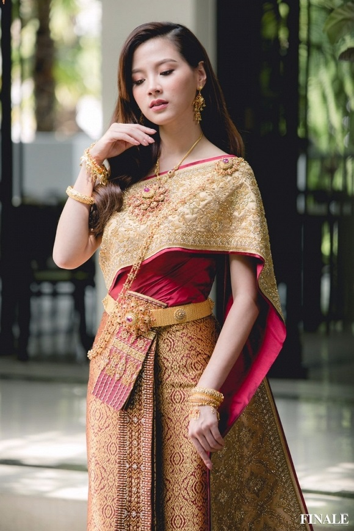
Trang phục truyền thống của người Thái mang dấu ấn tôn giáo.
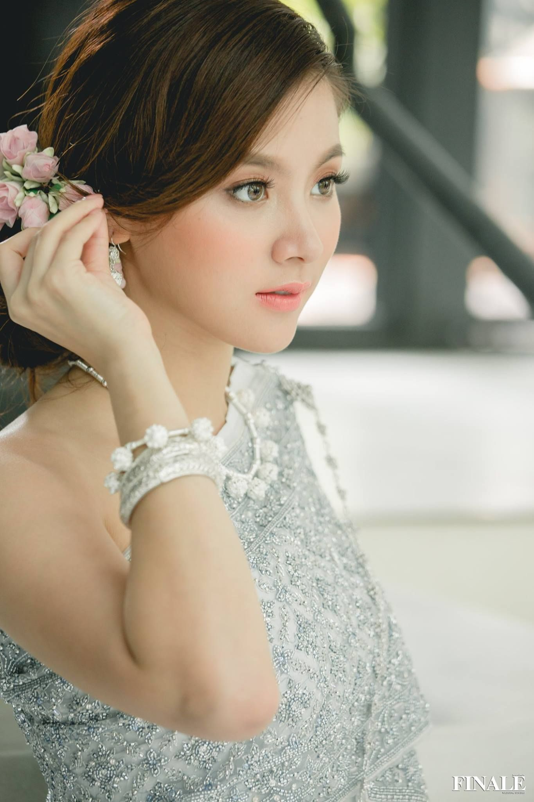
Trang phục truyền thống của Thái Lan không ôm sát cơ thể mà được may rộng, thoải mái và dễ mặc. Các mảnh vải lụa hoặc vải bông được nối, gấp, cuộn thành trang phục. Trang phục truyền thống của phụ nữ Thái Lan có 8 nhóm: Thai Chakkri, Thai Boromphiman, Thai Siwalai, Thai Chakkraphat, Thai Chitlada, Thai Ruean Ton, Thai Amarin và Thai Dusit. Trong đó có 3 loại phổ biến nhất được dùng cho tới tận bây giờ là Thai Chakkri, Thai Borompiman và Thai Siwalai.
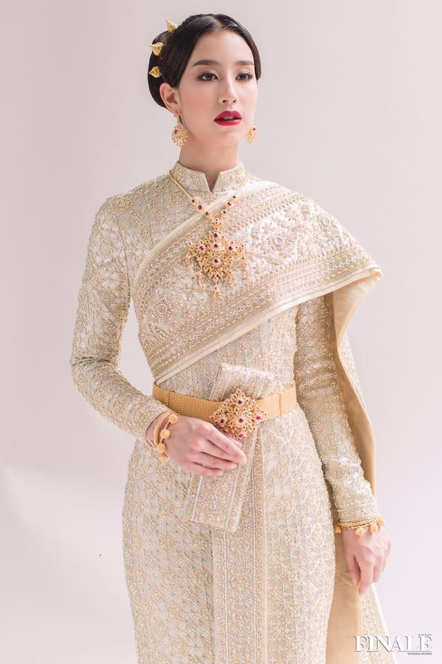
Kiểu trang phục hở vai được gọi là Thai Chakkri.
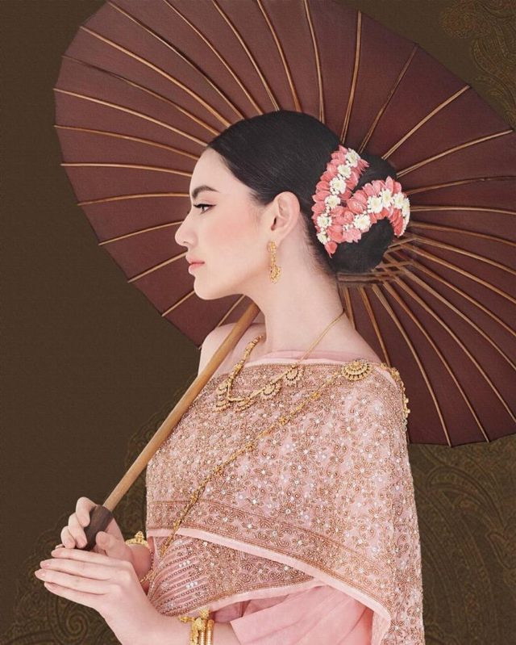
Baifern Pimchanok trong trang phục của nàng Thungsa.Thai Chakkri là loại trang phục được phụ nữ Thái sử dụng trong những dịp quan trọng thể hiện sự thanh lịch, quý phái. Trang phục này gồm váy dài quấn quanh người kết hợp với chiếc khăn dệt vắt qua để lộ một bên vai. Thai Borompiman thì kín đáo hơn với thiết kế áo dài tay cùng chân váy dài chấm mắt cá chân. Điểm nhấn là những họa tiết thêu tỉ mỉ trên trang phục tạo nên sự sang trọng thường được sử dụng trong tiệc tối.
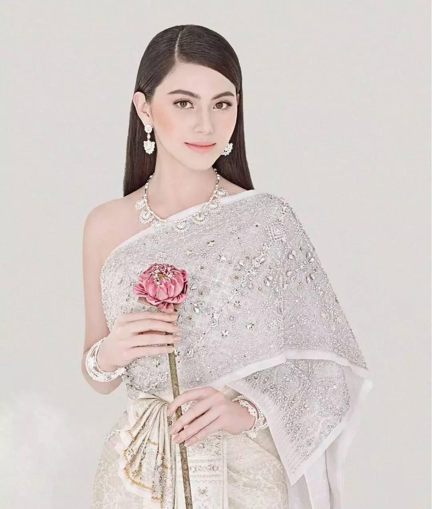
Thai Siwalai là sự kết hợp của Thai Borompiman và Thai Chakkri.
Thai Siwalai là sự kết hợp của hai kiểu trang phục trên với áo dài váy dài thêm một chiếc khăn vắt qua vai tạo nên vẻ nữ tính, kiêu sa. Mỗi loại trang phục có một nét đẹp riêng và được sử dụng trong những trường hợp khác nhau với những mục đích và hoàn cảnh khác nhau. Ngoài sự hấp dẫn về danh lam thắng cảnh hay những món ăn đặc trưng, Thái Lan còn thu hút bạn bè năm châu nhờ trang phục truyền thống thanh lịch và tinh tế.Một số mỹ nhân xứ sở chùa vàng trong bộ trang phục truyền thống.
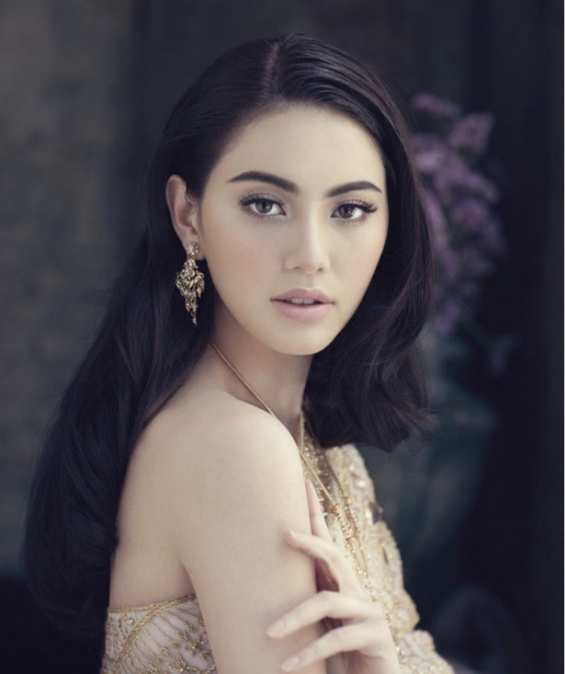
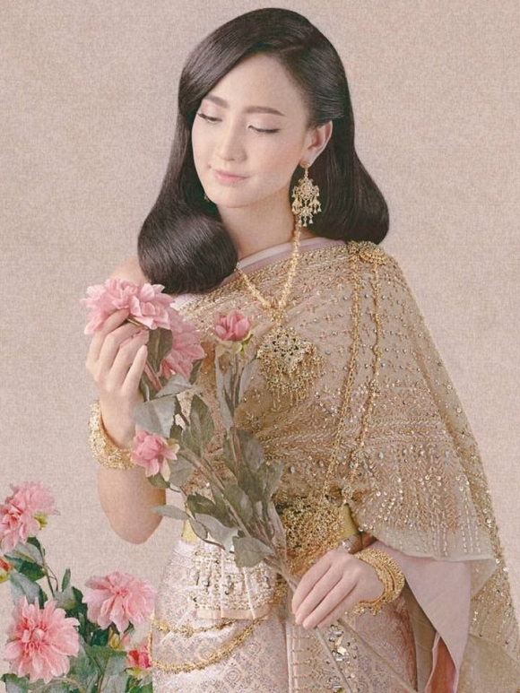
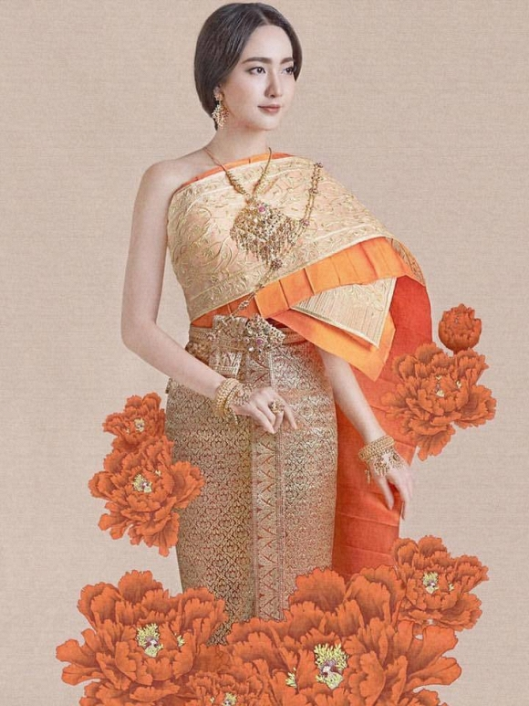
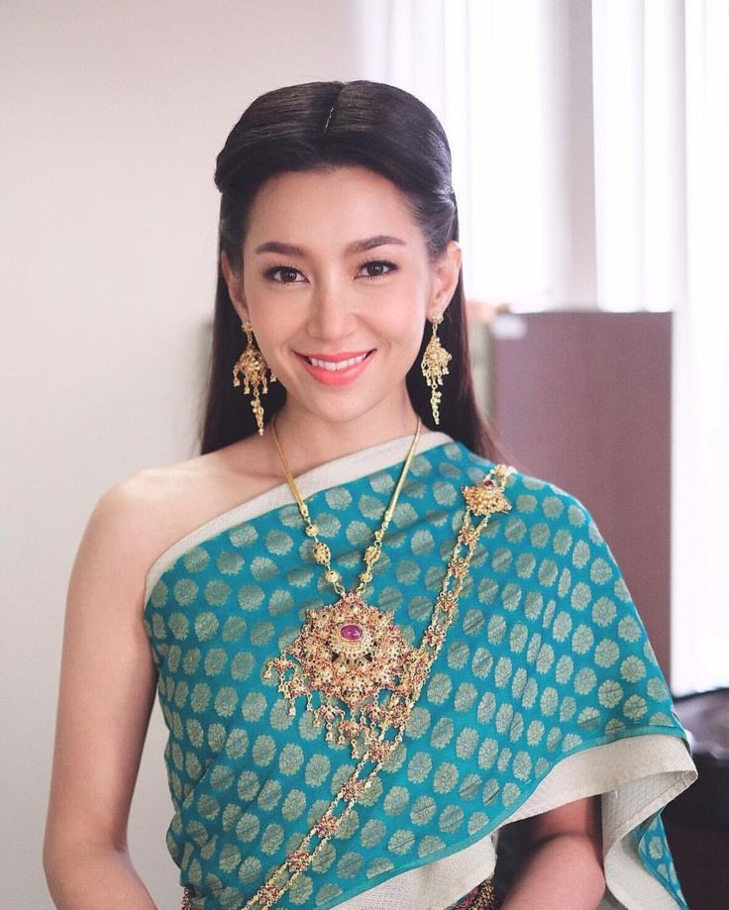
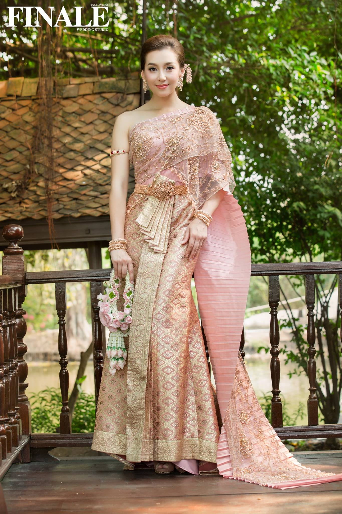
Nữ diễn viên Bella Ranee mang hai dòng máu Anh và Thái Lan.
Theo Hồng Linh (Dân Việt)